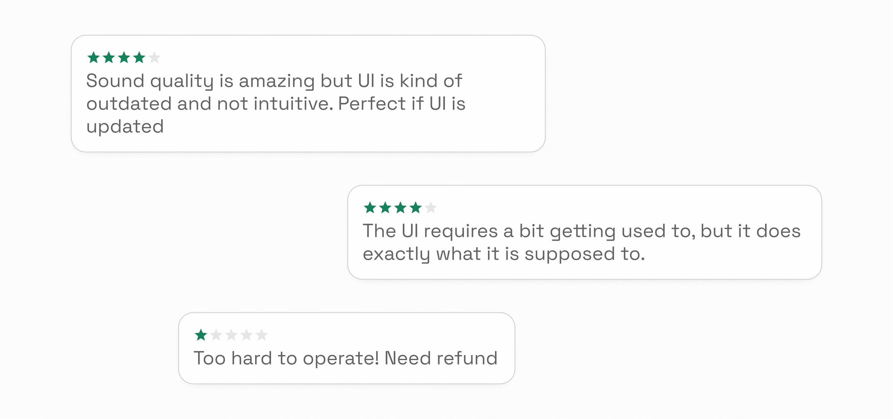
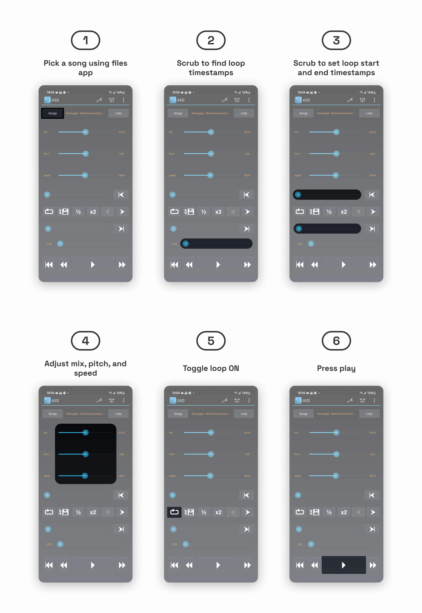
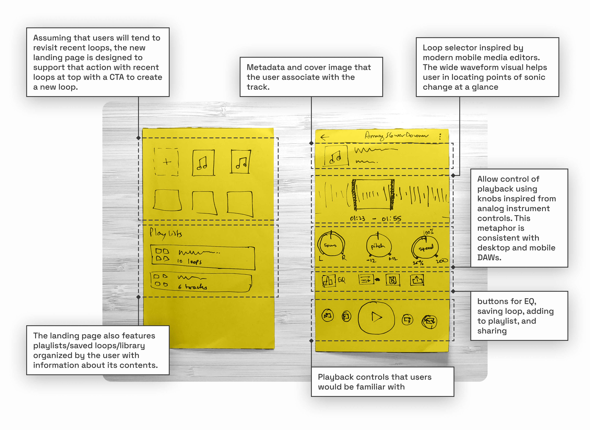
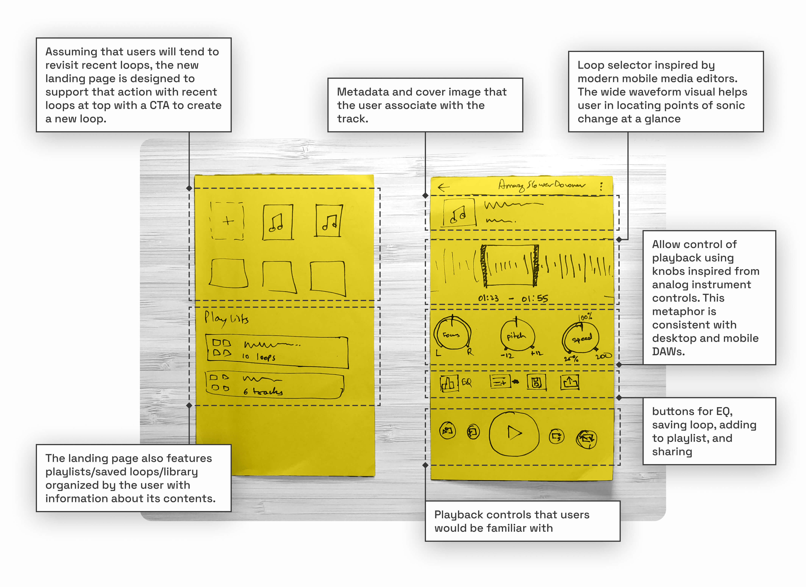
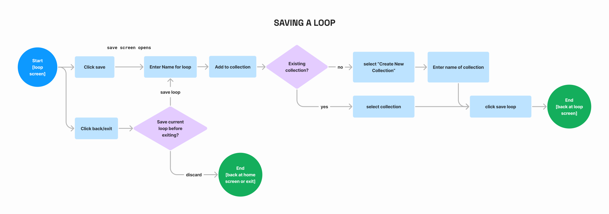
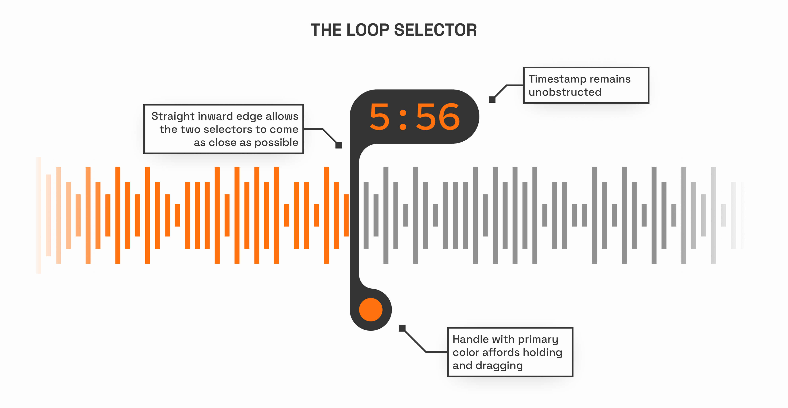
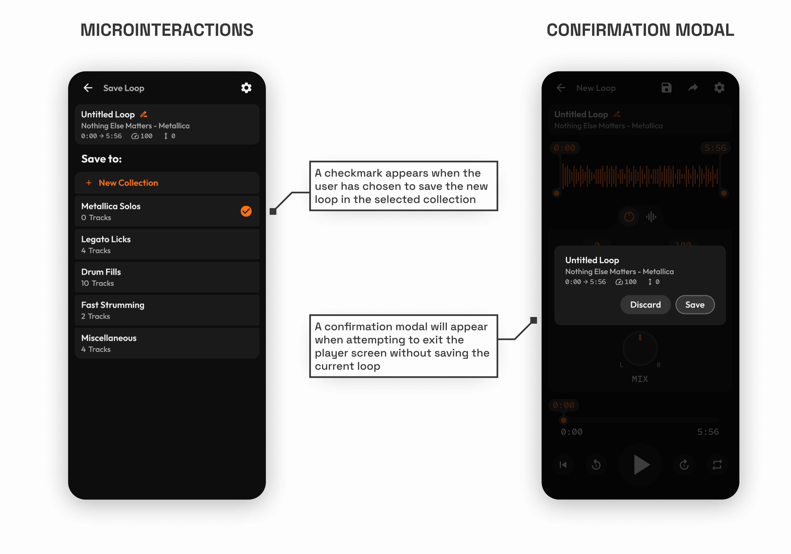

App Redesign
Amazing Slow Downer
Musicians learn and practice through repetition. They focus on specific sections of a track by slowing it down and listening to it over and over again. Amazing Slow Downer is an app that does just that. Roni music, an indie developer released the app back in 2013, making the functionality of his PC program much more accessible than before.
However, the application not only suffered from outdated visual design but also presented a steep learning curve, resulting in a significant usability challenge for its users.
secondary research
UI related issues are one of the prominent recurring theme in reviews for the existing app

heAURISTIC EVALUATION
The design of key UI elements within the main interface triggers a range of usability challenges


The app's extensive operation manual is also an indicator of the app's usability challenges

task flow analysis
Creating and playing a loop
The position and layout of different interactive elements didn’t align with order of steps in the task flow. The user therefore doesn’t receive any indication or guidance on how to achieve their goal. This results in increased cognitive load because they not only have to make sense of the interface, but also have to figure out the different steps required and the order in which they have to be performed.

Low Fidelity Wireframes
First concept made up of sketched ideas created up to this point
 
task flow analysis
Users create new loops when practicing a new track, but more often than that, they want effortless access to previously created loops.
The new app flow allows the user to save loops into named “collections” to improve findability. The user can create new collections to best fit their own categorization models. As per the redesigned IA, the user lands on a new home where they are presented with “Recently Opened” loops and their “Saved Collections.”

task flow analysis
There were 3 separate but very similar actions to save or share a created loop. There was opportunity to refine them based on the intended outcome

Modern mobile operating systems handle sharing and exporting files to external applications using the same system dialog, therefore, I chose to merge those paths.

Medium fidelity prototype
Testing, Iterating, and Visualizing
The mid-fi prototype served multiple purposes. It allowed me to conduct guerrilla usability tests using think-aloud protocol, mainly with a novice musician as the sole participant. In addition to usability, I used it for ergonomic testing, ensuring that frequently used interactive elements were comfortably accessible and that small target areas offered appropriate feedback. Moreover, it served as a foundation for planning essential components, various states, and dialogue prompts.

creative inspiration
Crafting the Visual Identity of the App
In shaping the app's visual identity, my vision was to strike a harmonious balance between skeuomorphic and surreal elements. My goal was to recreate the tactile and responsive qualities of physical instruments and control interfaces, which musicians are intimately familiar with, while harnessing the creative freedom that the digital medium affords.
To clarify this vision, I put together a mood board that guided me throughout the visual design process. Below, you can take a look at a snippet of the mood board I used to refine my design direction.
To clarify this vision, I put together a mood board that guided me throughout the visual design process. Below, you can take a look at a snippet of the mood board I used to refine my design direction.

typography & color
Intentional design choices for a clear, cohesive, and evocative experience
Two distinctive typefaces were strategically selected to enhance readability and facilitate interaction.
Outfit was chosen as the primary typeface for most of the text within the interface. Its simplicity, sans-serif design, modern appearance, and straightforward nature make it ideal for conveying information clearly.
Red Hat Mono, a monotype typeface, was reserved for specific elements within the interface. This includes labeling numerical values and associating with non-standard interactive components like knobs. The distinctive characteristics of Red Hat Mono ensure that these elements stand out while maintaining a cohesive design language.
Outfit was chosen as the primary typeface for most of the text within the interface. Its simplicity, sans-serif design, modern appearance, and straightforward nature make it ideal for conveying information clearly.
Red Hat Mono, a monotype typeface, was reserved for specific elements within the interface. This includes labeling numerical values and associating with non-standard interactive components like knobs. The distinctive characteristics of Red Hat Mono ensure that these elements stand out while maintaining a cohesive design language.
Orange was deliberately chosen as the primary color for its energy and its representation of creativity. These qualities are closely associated with the core themes of repetitive practice and music. Moreover, the use of orange imparts a retro vibe to the interface, infusing a sense of nostalgia and playfulness.
I also made use of Figma’s variable to create a well defined system of design tokens for color styles. This helps separate colors by both their numerical value and use-case while referencing a single source of truth to maintain consistency.
I also made use of Figma’s variable to create a well defined system of design tokens for color styles. This helps separate colors by both their numerical value and use-case while referencing a single source of truth to maintain consistency.

DETAILS MATTER
The most challenging (and fun!) part was designing new interactive elements and designing them well.
In this app, user actions are more complex compared to typical mobile apps. This makes purposeful design decisions even more crucial. I improved upon the unique interactive features tested in the mid-fi prototype and made them highly intuitive, particularly the loop selector.
I also made use of subtle design elements that significantly enhance the user experience. For example, confirmation modals ensure users don't lose their progress, while micro interactions boost user confidence in their actions.

I also made use of subtle design elements that significantly enhance the user experience. For example, confirmation modals ensure users don't lose their progress, while micro interactions boost user confidence in their actions.
High Fidelity Prototype
Challenges and Successes of Prototyping with Figma Variables
The use of Figma variables significantly helped reduce the number of screens in the final prototype. However, since the feature is still in beta, I did encounter a few challenges while using it for the prototype. One of the primary frustrations was the inability to link component properties to variables. It was also quite laborious to keep track of variable changes through interactions and equally laborious to update them. Nevertheless, clever use of variables did enable me to simulate the envisioned functionality much more closely than before.
Check out the final interactive prototype below!
logo design
“That loop selector handle sort of looks like a shell...a snail shell...ooo...a snail is also slow, but what if it was fast! Wait has that already been done? Ah turbo was a thing...but anyways...”
That’s how I started thinking about the logo for this app. In the beginning I wanted the similarities between the snail in the logo and the UI elements to be quite apparent, but after escaping that tunnel vision and building upon the idea, the final logo was created.